Estruturação
Base do ecossistema
Validação das jornadas, formação da rede de parceiros e preparação da infraestrutura digital.
O Connect Vet do Brasil é um ecossistema que integra tutores, profissionais, empresas e iniciativas sociais para transformar a jornada do cuidado animal.
Imagine um sistema que atende a todas as necessidades de um setor, conectando pessoas, empresas e serviços do início ao fim.
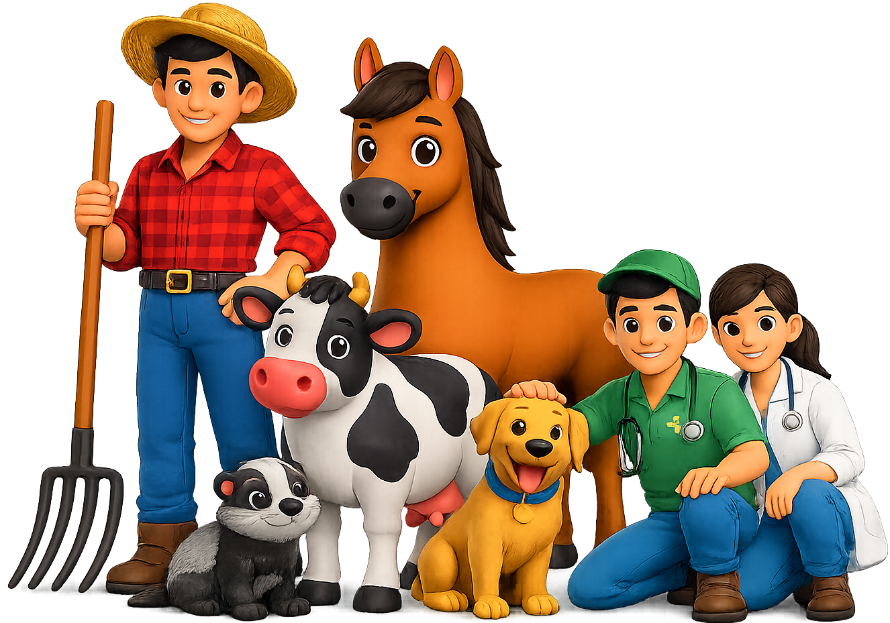
Explore os núcleos do Connect Vet do Brasil e entenda como informação, serviços, oportunidades e impacto social circulam pela plataforma.
Explore as duas experiências principais do Connect Vet. O módulo Solidário entrará dentro dos apps Easy e Professional, integrando impacto social à jornada.
Encontre profissionais próximos, acompanhe seus animais e organize os próximos cuidados.
Acesse sua jornada de cuidado animal.
Crie perfis completos para cada animal e mantenha dados importantes sempre por perto.
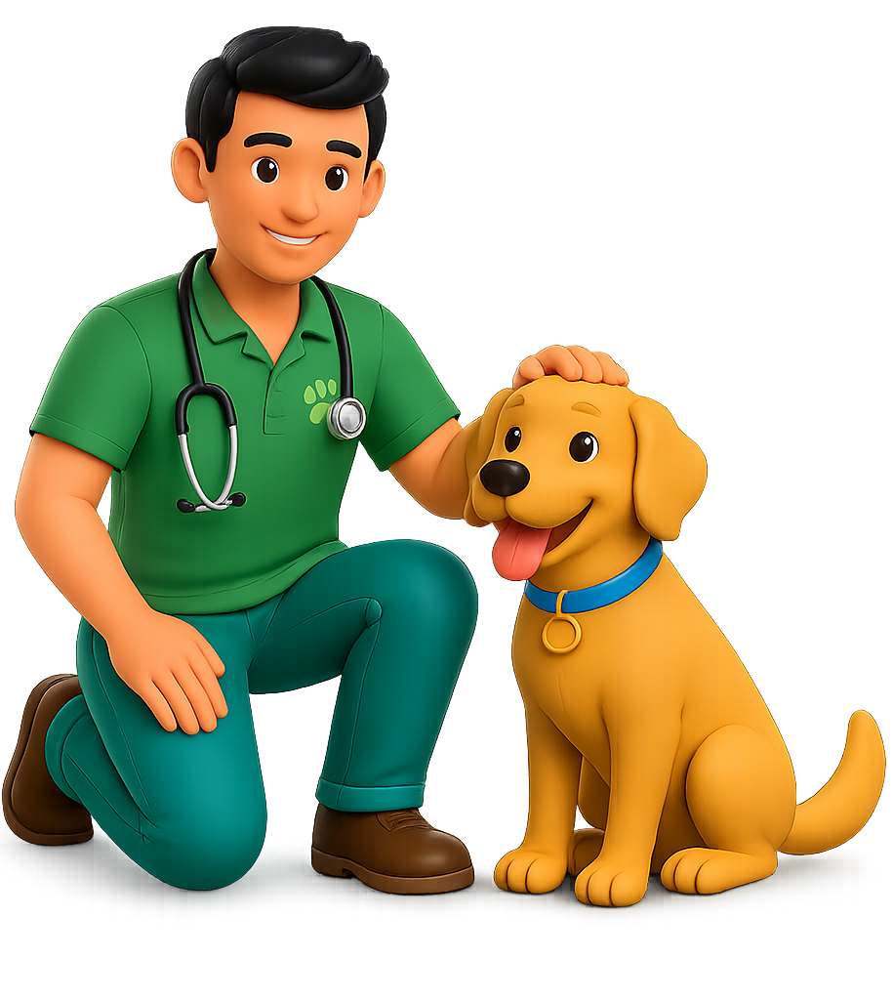
Um mundo cheio de oportunidades para você, profissional, crescer na carreira e trabalhar com o que ama.
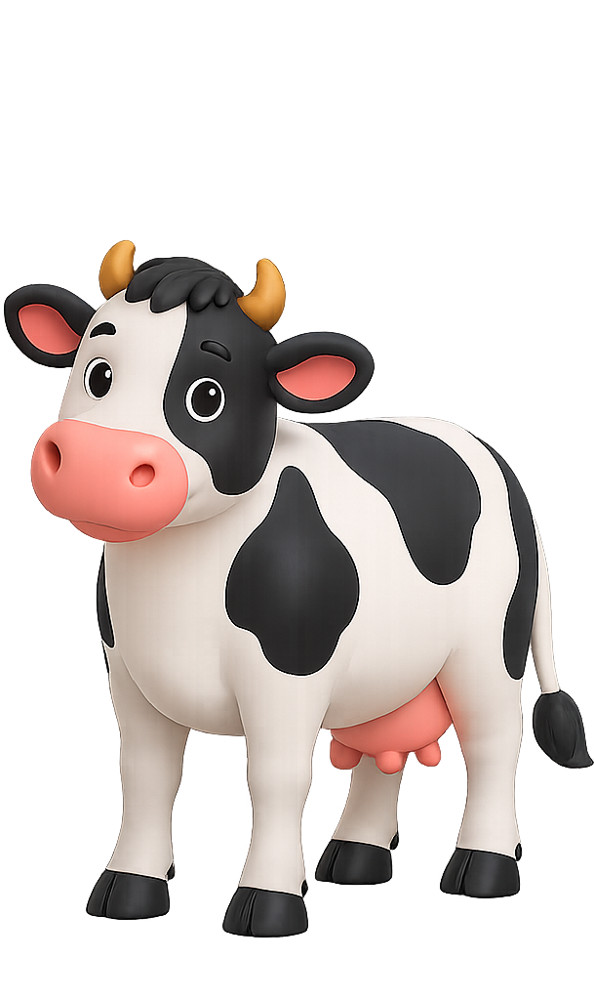
Uma vitrine digital para profissionais do setor animal.
Cadastre seus serviços, organize sua agenda, receba solicitações, converse com clientes e fortaleça sua presença dentro de uma rede especializada no cuidado animal.
Organize atendimentos, horários e lembretes profissionais.
Receba solicitações de clientes e oportunidades na sua região.
Envie orientações, documentos e registros importantes.
Acompanhe resultados, históricos e informações do animal.
Cadastre tutores, criadores e acompanhe cada atendimento.
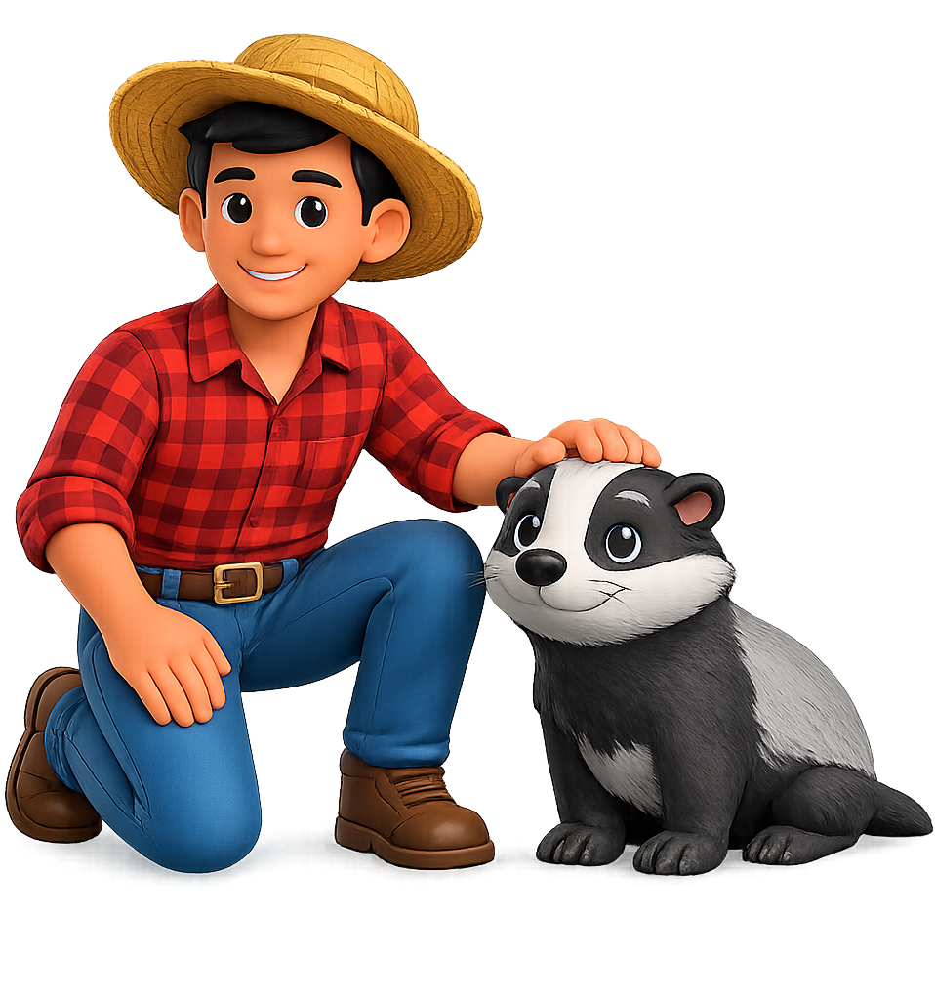
Um app pensado para tutores, criadores e famílias encontrarem profissionais, serviços, orientações e soluções para animais de pequeno e grande porte em poucos cliques.
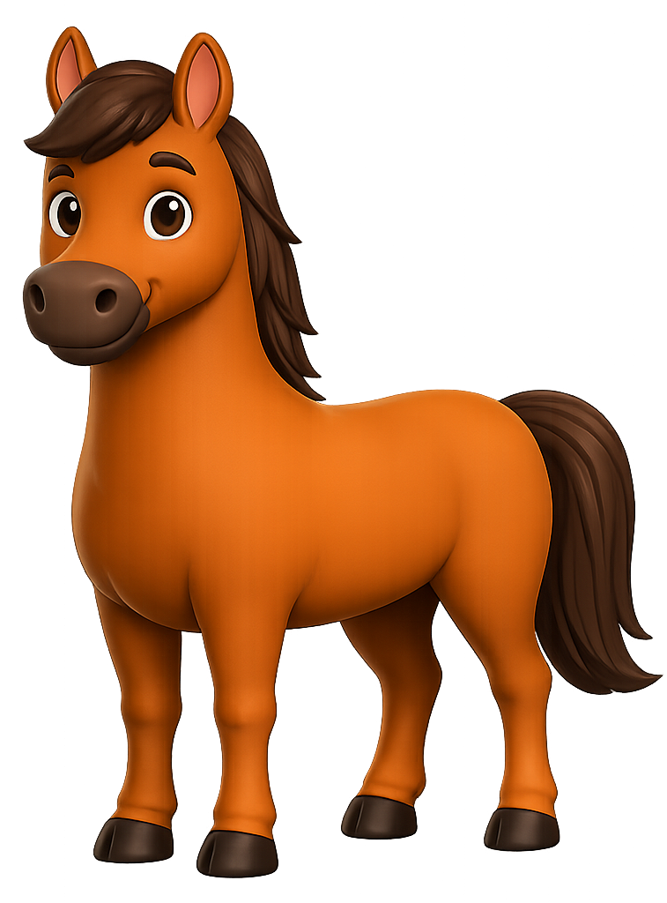
Uma experiência clara, rápida e confiável para facilitar o cuidado animal.
Localize profissionais, acompanhe informações importantes, encontre clínicas, serviços, produtos, campanhas e parceiros dentro de uma rede nacional criada para aproximar quem precisa de cuidado de quem sabe cuidar.
Encontre profissionais, clínicas e serviços próximos da sua região.
Acesse orientações, lembretes e informações úteis para o bem-estar animal.
Facilite solicitações, contatos e acompanhamento de atendimentos.
Conecte tutores, criadores, profissionais, parceiros e ações sociais.
Tenha acesso a campanhas, adoções, parceiros e soluções do ecossistema.
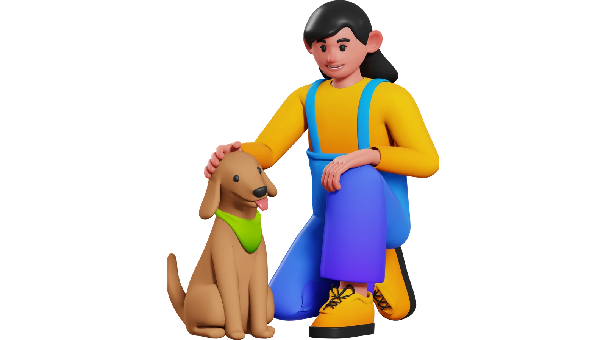
Um módulo social para conectar ONGs, protetores, voluntários, empresas e pessoas dispostas a transformar a vida de animais em situação de vulnerabilidade.
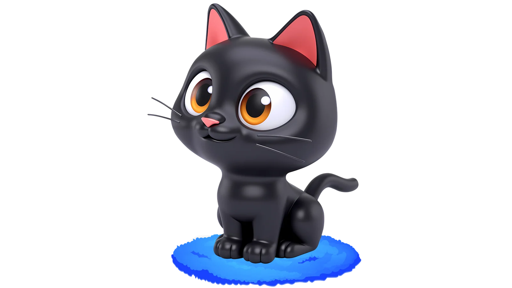
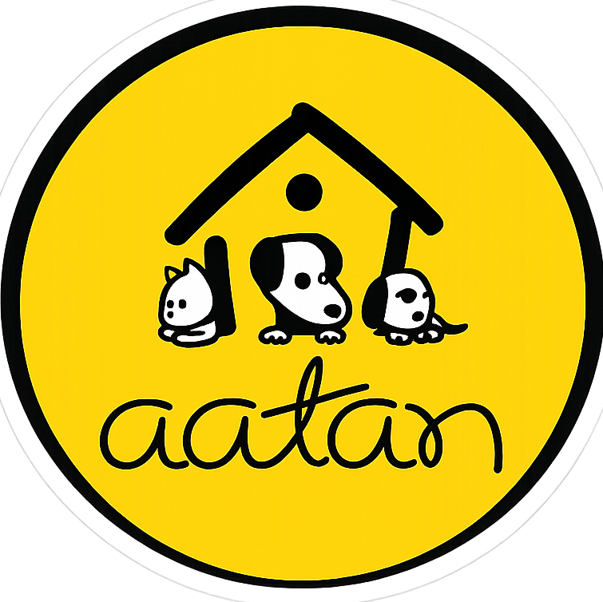
Associação Abrigo Temporário de Animais Necessitados.
Apoiando o Connect Vet Solidário na missão de promover adoções, resgates, cuidado, acolhimento e uma vida melhor para milhares de animais.
Divulgue arrecadações, mutirões e ações urgentes.
Apoie um animal ou uma causa com contribuições recorrentes.
Doe tempo, transporte, serviços e apoio real.
Conecte animais resgatados a lares cheios de amor.
Doe com PIX, ração, medicamentos e apoio emergencial.
Cada fase do Connect Vet do Brasil foi planejada para gerar crescimento sustentável, fortalecer a comunidade animal e construir uma plataforma preparada para atuar em todo o país.
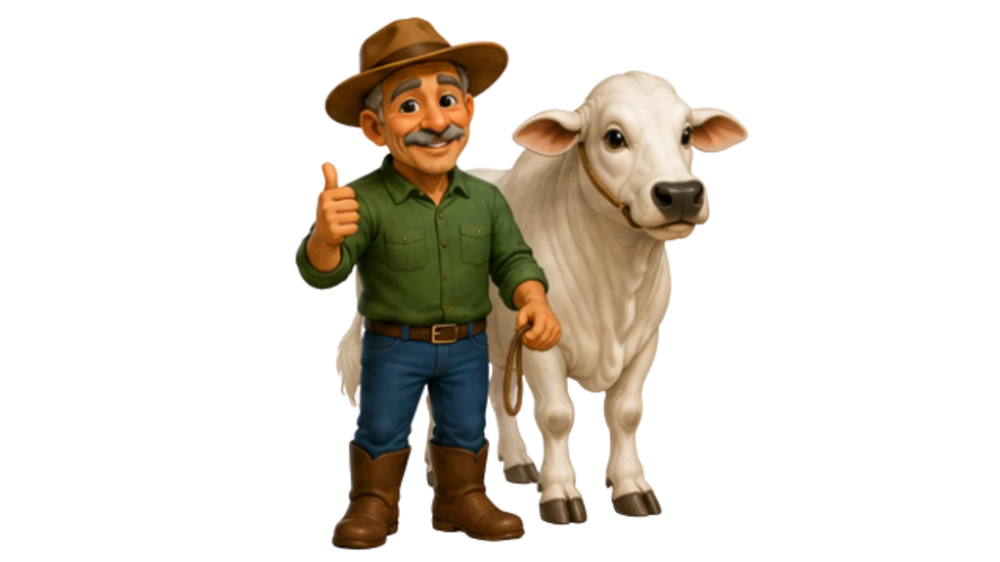
Validação das jornadas, formação da rede de parceiros e preparação da infraestrutura digital.
Entrada dos primeiros profissionais e tutores, com busca, perfis, contatos e organização de atendimentos.
Ampliação de serviços, parcerias e iniciativas do Connect Vet Solidário em novas regiões do Brasil.
O Connect Vet do Brasil acredita em conexões reais com instituições, empresas e pessoas que desejam gerar impacto positivo no setor animal.
Quero fazer parteAssociação Abrigo Temporário de Animais Necessitados.
A AATAN atua no acolhimento, proteção e apoio a animais em situação de vulnerabilidade, fortalecendo ações de cuidado, adoção responsável e conscientização.
Clínicas, profissionais, pet shops, empresas, ONGs, apoiadores e investidores podem integrar essa rede de colaboração para ampliar oportunidades, visibilidade e impacto social.
Entrar em contatoEntre em contato para apresentar uma parceria, demonstrar interesse no projeto ou conversar sobre participação como profissional, clínica, pet shop, investidor ou parceiro estratégico.
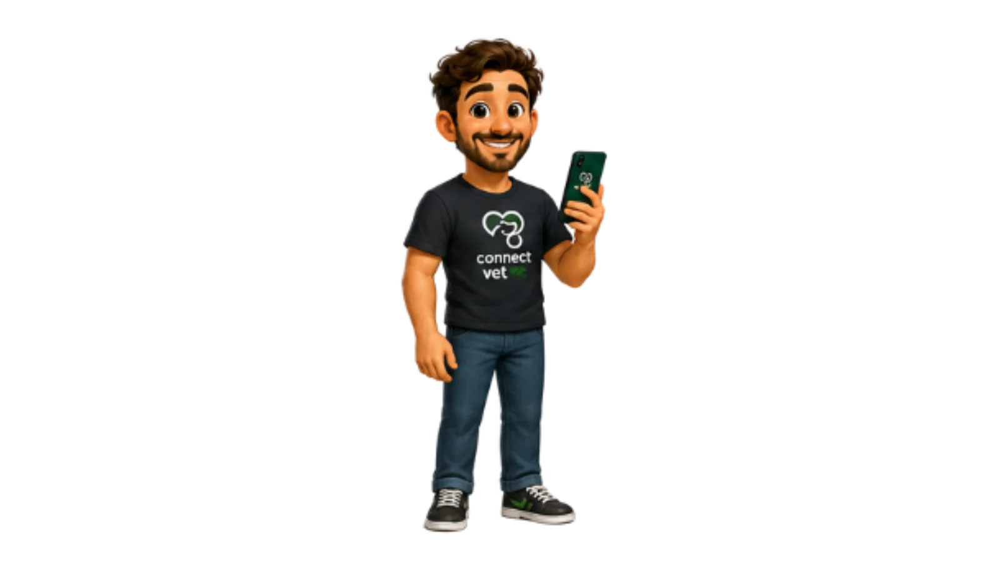